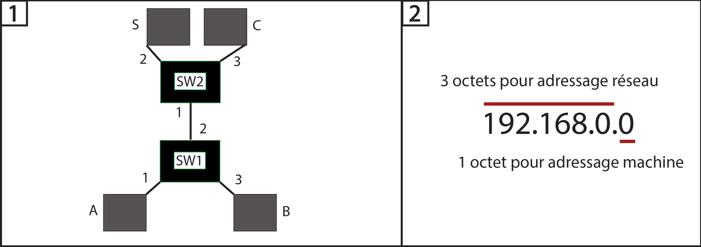

Architecture des réseaux

Définitions et concepts de base : (numéros associés aux figures)
1. Commutation Ethernet : Soit le réseau Ethernet composé de deux commmutateurs Ethernet SW1 et SW2 reliés par des liens Ethernet. S est un serveur auxquels les stations (ordinateurs) A et B peuvent accéder (mais A et B ne communiquent pas entre eux ici). C est un autre ordinateur. Les numéros indiqués sont les numéros des ports des commutateurs. Si les stations A, B et C démarrent en même temps, la table de commutation des deux commutateurs est :
- SW1 :
- Port 1 : Inscrit l'adresse MAC de A, soit @MAC_A.
- Port 2 : Inscrit l'adresse MAC de toutes les stations et serveurs situé(e)s de ce côté (cf. le noeud d'un arbre a plusieurs branches connectées), soit @MAC_S et @MAC_C.
- Port 3 : Inscrit l'adresse MAC de B, soit @MAC_B.
- SW2 :
- Port 1 : Inscrit l'adresse MAC de toutes les stations situées de ce côté, soit @MAC_A et @MAC_B.
- Port 2 : Inscrit l'adresse MAC de S, @MAC_S.
- Port 3 : Inscrit l'adresse MAC de C, soit @MAC_C.
2. Masques de sous-réseaux :
| Classe d'adresse IP |
Champs de valeurs publiques |
Champs de valeurs privées |
Masque de sous-réseau par défaut |
Notation CIDR (*) |
| Classe A |
1.X.X.X -> .126.X.X.X |
10.0.0.0 -> 10.255.255.255 |
255.0.0.0 |
/8 |
| Classe B |
128.X.X.X -> 191.X.X.X |
172.16.0.0 -> 172.31.255.255 |
255.255.0.0 |
/16 |
| Classe C |
192.X.X.X -> 223.X.X.X |
192.168.0.0 -> 192.168.255.255 |
255.255.255.0 |
/24 |
* Nombre adresses IPv4 disponibles pour les hôtes du réseau.
Soit l'adresse IP 192.168.0.0 (classe C). Une adresse IP est codée sur quatre octets, chacun codé de 0 à 255. Pour calculer le nombre d'adresses locales possibles, il faut utiliser la formule suivante : "2^n - 2^1" avec 2^1 qui est l'octet réservé à la machine (adresse broadcast + sous-réseau).
==> Ici ce sera 2^8-2^1=254 adresses disponibles car pour quatre octets d'adresse on aura la décomposition suivante en codage binaire : 2^8.2^4.2^2.2^1. Il s'agit du nombre de combinaisons diponibles pour les adresses machines.
(Rappel : Les octets se calculent en binaire, donc 2^n avec n qui reprend la valeur résultante en binaire de l'octet précédent).
- Adresse en binaire : Elle se décompose ainsi sur le premier octet (voir pour le détail : Exemple 1.1) :
[ 1 , 1 ][ 0, 0, 0, 0, 0, 0]
soit :
[2^8, 2^7][2^6, 2^5, 2^4, 2^3, 2^2, 2^1]
==>[1,1]=2^7+2^6=192 : C'est la partie adresse machine de l'adresse IP. Cette valeur remplacera le "0" du masque de sous-réseau par défaut.
- Masque : L'adresse IP est de classe C. On sait que le masque réseau de cette classe est 255.255.255.0. Il y aura donc un octet
(partiellement) disponible dont il faudra remplacer la valeur par 192 (valeur octet adressage machine) pour connaître la valeur du masque de cette adresse IP (et non pas de sa classe), soit : 255.255.255.192. Parmi les quatre octets, les trois premiers (bits de machine) sont remplis (255) de 8 bits chacun (un octet = 8 bits), tandis que le dernier (bit de sous-réseau) a 2 bits sur 8 disponibles. Pourquoi 2 bits ? Pour la valeur 192, il faut en écriture binaire mettre un 1 à 128 et à 164. Le numéro du masque (/26) se trouve en comptant le nombre de 1 (bits significatifs) en écriture binaire de l'adresse 255.255.255.192, tel que 255=8 bits (voir : Exemple 1.2), d'où 8*3=24 bits + 2 bits (192=2 bits en écriture binaire) (voir : Exemple 1.3).
- Sous-réseaux : On pourra en déployer jusqu'à quatre, car pour 2 emplacements de valeurs possibles ([1,1]) sur la partie adressage machine il y a 2^2=4 possibilités (avec formule 2^n et le chiffre deux représentant les possibilités du binaire : 0 et 1). Ils se décomposent ainsi :
| Sous-réseau |
Bornes * |
Masque |
| [ 0 , 0 ] : / |
.1 -> .62 broadcast 63 |
/26 |
| [ 0 , 1 ] : 64 |
.65 -> .126 broadcast 127 |
/26 |
| [ 1 , 0 ] : 128 |
.129 -> .190 broadcast 191 |
/26 |
| [ 1 , 1 ] : 192 |
.193 -> .254 broadcast 255 |
/26 |
* Plages d'adresses machines qui servent à adresser les sous-réseaux
Adressage IP :
| Adresse IP Hôte |
Classe d'adresse |
Adresse Réseau |
Adresse Broadcast Réseau |
Masque de sous-réseau |
| 216.14.55.137 |
C (publique) |
216.14.55.0 |
216.14.55.255 |
255.255.255.0 |
| 123.1.1.15 |
A (publique) |
123.0.0.0 |
123.255.255.255 |
255.0.0.0 |
| 175.12.239.244 |
B (publique) |
175.12.0.0 |
175.12.255.255 |
255.255.0.0 |
- Remplissage des champs :
- Adresse Réseau : Croiser adresse IP Hôte et Masque de sous-réseau de la classe correspondante. Les "0" du masque remplacent alors les chiffres de l'adresse IP Hôte.
- Adresse Broadcast Réseau : Les 0 sont remplacés par des 255.
- Masque de sous-réseau : Inverser le 255->0 et les autres chiffres en 255.
| Masque de sous-réseau (classe C) |
Nombre de sous-réseaux |
Nombre de machines (ou d'hôtes) |
| 255.255.255.0 (/24) |
1 (2^0=1) |
2^8-2=254 |
| 255.255.255.128 (/25) |
2(0 ou 1) (2^1=2) |
2^7-2=128 |
| 255.255.255.192 (/26) |
4 (2^2=4) |
2^6-2=62 |
| 255.255.255.224 (/27) |
8 (2^3=8) |
2^5-2=30 |
| 255.255.255.240 (/28) |
16 (2^4=16) |
2^4-2=14 |
| 255.255.255.248 (/29) |
32 (2^5=32) |
2^3-2=6 |
| 255.255.255.252 (/30) |
64 (2^6=64) |
2^2-2=2 |
| 255.255.255.254 (/31) |
128 (2^7=128) |
2^1-2=0 |
- Remplissage des champs :
- Masque de sous-réseau : D'après la formule du nombre de machines : 0 bits sont utilisés puis il reste 7 bits soit 2^7=128...
puis 2^6=64 et donc 128+64=192, puis 2^5=32 et donc 192+32=224...
- Nombre de sous-réseaux : 0 bits sont utilisés donc 2^0, puis 1 bit est utilisé donc 2^1=2...
- Nombre de machines : Utilise la formule 2^(32-n)-2^1 avec n=CIDR=/24=nombre bits significatifs soit 2^(32-24)-2=2^8-2=254 (plus simplement 8 bits disponibles sur l'octet d'adressage machine), puis 7 bits disponibles pour 1 bit utilisé...
Routage IP :
Télécharger :
Adresse IP et masque de sous-réseau.ods
Tableur établi à partir de cette page Web :
Adresses IP et masques de sous-réseau en IPV4
Sitographie utile :
-
Les Adresses IP privées et publiques
-
Réseaux TCP/IP/Adressage IP v4
-
Masque de sous-réseau IP
-
Protocole I.P. : réseaux et sous-réseaux (locaux)
-
Entête Ethernet
-
Datagramme IP
-
Adressage IP
-
Routage